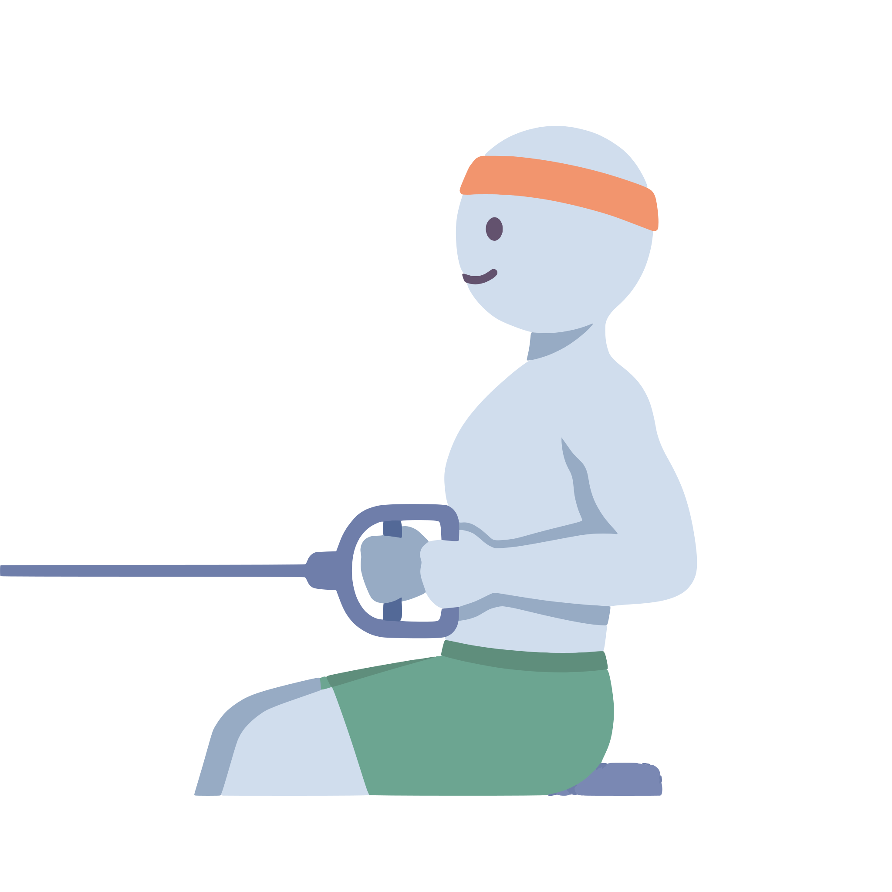

ONE WORKOUT. THEN ANOTHER.
2025.
Your year.
Quite a story.
Thong, look at all
those training days.
ALL THOSE TIMES YOU SHOWED UP
A little room.
Again and again.
completed
32 weeks with time for you.
Some busy months. Some quieter ones.
You kept finding room.
Every dot is a week. Every filled dot holds a workout.
TIME YOU MADE FOR YOURSELF
Little windows.
A lot of time.
in training
That’s quite a watchlist.
Enough time for 108 half-hour episodes.
Your series came with a little more effort.
A LITTLE LIKE A SIGNATURE
These moves.
Very you.
Bench Press
30 sessions
Goblet Squat
28 sessions

Seated Row
26 sessions
Familiar, for a reason.
Three exercises you kept coming back to.
A little practice, over and over.
A session counts once for each exercise you completed.
A SMALL CHANGE. A REAL STEP.
You grew
into it.
8 reps
10 reps
A little heavier.
A couple more reps.
Progress can look like this, too.
Same exercise · Weight of one dumbbell.Two logged sets, not a test of your maximum.
ONE REP AT A TIME
Heavier than
you think.
No parking space required.
72 workouts. One set at a time.
Approx. 6,000 kg per bus · Volume = weight × reps.ONE MOMENT TO KEEP
And then,
you came back.

Full Body
35 minutes · At your own pace
A place to begin again.
You didn’t have to make up for it.
You just made room for the next session.
A gap between recorded workouts, followed by a completed session.A YEAR OF SHOWING UP
All those days.
All yours.

Built one little day at a time.
ILLUSTRATIVE DEMO YEAR